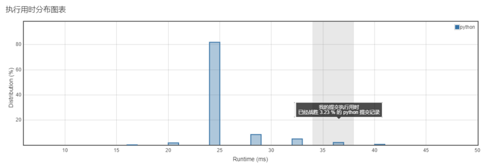
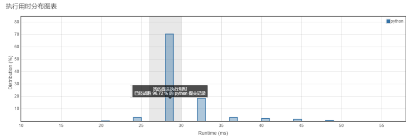
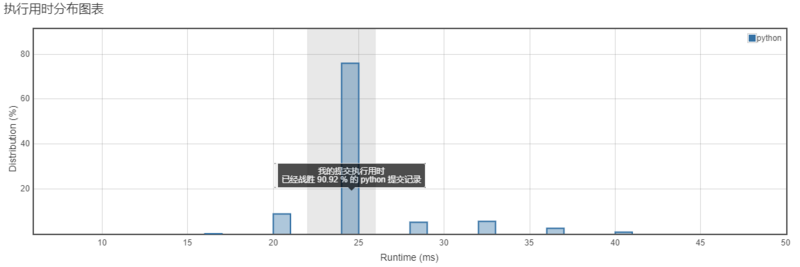
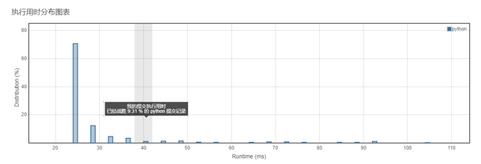

<!DOCTYPE html>
<html>
<head><meta name="generator" content="Hexo 3.8.0">
  <meta charset="utf-8">
  
  <title>Aloha | Gaga酱的奇思妙想</title>
  <meta name="viewport" content="width=device-width, initial-scale=1, maximum-scale=1">
  
    <meta name="keywords" content="萌萌の嘎嘎">
  
  
  
  
  <meta name="description" content="磨刀霍霍向动态规划！">
<meta name="keywords" content="leetcode,python">
<meta property="og:type" content="article">
<meta property="og:title" content="小李飞刀：做题第九弹！">
<meta property="og:url" content="http://yoursite.com/2019/03/19/小李飞刀：做题第九弹！/index.html">
<meta property="og:site_name" content="Gaga酱の奇思妙想">
<meta property="og:description" content="磨刀霍霍向动态规划！">
<meta property="og:locale" content="zh-Hans">
<meta property="og:image" content="http://yoursite.com/2019/03/19/小李飞刀：做题第九弹！/1.png">
<meta property="og:image" content="http://yoursite.com/2019/03/19/小李飞刀：做题第九弹！/2.png">
<meta property="og:image" content="http://yoursite.com/2019/03/19/小李飞刀：做题第九弹！/3.png">
<meta property="og:image" content="http://yoursite.com/2019/03/19/小李飞刀：做题第九弹！/4.png">
<meta property="og:updated_time" content="2019-04-10T16:59:27.921Z">
<meta name="twitter:card" content="summary">
<meta name="twitter:title" content="小李飞刀：做题第九弹！">
<meta name="twitter:description" content="磨刀霍霍向动态规划！">
<meta name="twitter:image" content="http://yoursite.com/2019/03/19/小李飞刀：做题第九弹！/1.png">
  
  <link rel="icon" href="/css/images/favicon.png">
  
    <link href="//fonts.googleapis.com/css?family=Source+Code+Pro" rel="stylesheet" type="text/css">
  
  <link href="https://fonts.googleapis.com/css?family=Open+Sans|Montserrat:700" rel="stylesheet" type="text/css">
  <link href="https://fonts.googleapis.com/css?family=Roboto:400,300,300italic,400italic" rel="stylesheet" type="text/css">
  <link href="//cdn.bootcss.com/font-awesome/4.6.3/css/font-awesome.min.css" rel="stylesheet">
  <style type="text/css">
    @font-face{font-family:futura-pt;src:url(https://use.typekit.net/af/9749f0/00000000000000000001008f/27/l?subset_id=2&fvd=n5) format("woff2");font-weight:500;font-style:normal;}
    @font-face{font-family:futura-pt;src:url(https://use.typekit.net/af/90cf9f/000000000000000000010091/27/l?subset_id=2&fvd=n7) format("woff2");font-weight:500;font-style:normal;}
    @font-face{font-family:futura-pt;src:url(https://use.typekit.net/af/8a5494/000000000000000000013365/27/l?subset_id=2&fvd=n4) format("woff2");font-weight:lighter;font-style:normal;}
    @font-face{font-family:futura-pt;src:url(https://use.typekit.net/af/d337d8/000000000000000000010095/27/l?subset_id=2&fvd=i4) format("woff2");font-weight:400;font-style:italic;}</style>
    
  <link rel="stylesheet" id="athemes-headings-fonts-css" href="//fonts.googleapis.com/css?family=Yanone+Kaffeesatz%3A200%2C300%2C400%2C700&amp;ver=4.6.1" type="text/css" media="all">

  <link rel="stylesheet" id="athemes-headings-fonts-css" href="//fonts.googleapis.com/css?family=Oswald%3A300%2C400%2C700&amp;ver=4.6.1" type="text/css" media="all">
  <link rel="stylesheet" href="/css/style.css">

  <script src="/js/jquery-3.1.1.min.js"></script>

  <!-- Bootstrap core CSS -->
  <link rel="stylesheet" href="/css/bootstrap.css">
  <link rel="stylesheet" href="/css/fashion.css">
  <link rel="stylesheet" href="/css/glyphs.css">
  <!-- Global site tag (gtag.js) - Google Analytics -->
  <script async src="https://www.googletagmanager.com/gtag/js?id=UA-142486934-1"></script>
  <script>
    window.dataLayer = window.dataLayer || [];
    function gtag(){dataLayer.push(arguments);}
    gtag('js', new Date());

    gtag('config', 'UA-142486934-1');
  </script>


</head>
</html>


  <body data-spy="scroll" data-target="#toc" data-offset="50">


  
  
  <div class="site-header-image">
    
  </div>

  <div id="header-blur" class="site-header-image blur" style="position: absolute; top:0; height: 207px; min-height: 207px; min-width: 100%;">
    
  </div>

  <script>
        var imgUrls = "css/images/pic0.jpg,css/images/pic2.png,css/images/pic4.jpg".split(",");
        var random = Math.floor((Math.random() * imgUrls.length ));
        if (imgUrls[random].startsWith('http') || imgUrls[random].indexOf('://') >= 0) {
          document.getElementById("originBg").src=imgUrls[random];
          document.getElementById("blurBg").src=imgUrls[random];
        } else {
          document.getElementById("originBg").src='/' + imgUrls[random];
          document.getElementById("blurBg").src='/' + imgUrls[random];
        }
    </script>


<header id="allheader" class="site-header" role="banner" style="width: 100%; position: absolute; top:0; background: rgba(255,255,255,.8);">
  <div class="clearfix container">
      <div class="site-branding">

          <h3 class="site-title">
            
              <a href="/" title="Gaga酱の奇思妙想" rel="home"> Gaga酱の奇思妙想 </a>
            
          </h3>
          
          
            <div class="site-description">深水静流</div>
          
            
          <nav id="main-navigation" class="main-navigation" role="navigation">
            <a class="nav-open">Menu</a>
            <a class="nav-close">Close</a>

            <div class="clearfix sf-menu">
              <ul id="main-nav" class="menu sf-js-enabled sf-arrows" style="touch-action: pan-y;">
                    
                      <li class="menu-item menu-item-type-custom menu-item-object-custom menu-item-home menu-item-1663"> <a class href="/">冲鸭❤</a> </li>
                    
                      <li class="menu-item menu-item-type-custom menu-item-object-custom menu-item-home menu-item-1663"> <a class href="/archives">archives❤</a> </li>
                    
                      <li class="menu-item menu-item-type-custom menu-item-object-custom menu-item-home menu-item-1663"> <a class href="/categories">碎碎念的基本法❤</a> </li>
                    
                      <li class="menu-item menu-item-type-custom menu-item-object-custom menu-item-home menu-item-1663"> <a class href="/tags">tags❤</a> </li>
                    
                      <li class="menu-item menu-item-type-custom menu-item-object-custom menu-item-home menu-item-1663"> <a class href="/about">岁月如歌❤</a> </li>
                    
                      <li class="menu-item menu-item-type-custom menu-item-object-custom menu-item-home menu-item-1663"> <a class href="/books">阅❤</a> </li>
                    
                      <li class="menu-item menu-item-type-custom menu-item-object-custom menu-item-home menu-item-1663"> <a class href="/movies">影❤</a> </li>
                    
              </ul>
            </div>
          </nav>

      </div>
  </div>
</header>


  <div id="container">
    <div id="wrap">
            
      <div id="content" class="outer">
        
          <section id="main" style="float:none;"><article id="w-小李飞刀：做题第九弹！" style="width: 66%; float:left;" class="article article-type-w" itemscope itemprop="blogPost">
  <div id="articleInner" class="clearfix post-1016 post type-post status-publish format-standard has-post-thumbnail hentry category-template-2 category-uncategorized tag-codex tag-edge-case tag-featured-image tag-image tag-template">
    
    
      <header class="article-header">
        
  
    <h1 class="thumb" itemprop="name">
      小李飞刀：做题第九弹！
    </h1>
  

      </header>
    
    <div class="article-meta">
      
	<a href="/2019/03/19/小李飞刀：做题第九弹！/" class="article-date">
	  <time datetime="2019-03-19T14:52:11.000Z" itemprop="datePublished">March 19, 2019</time>
	</a>

      
	<span class="ico-folder"></span>
    <a class="article-category-link" href="/categories/小李の放学后/">小李の放学后</a>
 
      
    </div>
    <div class="article-entry" itemprop="articleBody">
      
        <p></p>
<h4 id="写在前面的话"><a href="#写在前面的话" class="headerlink" title="写在前面的话"></a>写在前面的话</h4><p>感觉做题越多遇到的写法越多，有种跃跃欲试的感觉~</p>
<h4 id="认真做题"><a href="#认真做题" class="headerlink" title="认真做题"></a>认真做题</h4><h5 id="第一题"><a href="#第一题" class="headerlink" title="第一题"></a>第一题</h5><p><strong><a href="https://leetcode-cn.com/problems/climbing-stairs/" target="_blank" rel="noopener">70. 爬楼梯</a></strong><br><strong>难度：简单</strong><br>假设你正在爬楼梯。需要 n 阶你才能到达楼顶。<br>每次你可以爬 1 或 2 个台阶。你有多少种不同的方法可以爬到楼顶呢？<br><strong>注意</strong>：给定<code>n</code>是一个正整数。<br><strong>我的题解：</strong><br><figure class="highlight ceylon"><table><tr><td class="code"><pre><span class="line"><span class="keyword">class</span> Solution(<span class="keyword">object</span>):</span><br><span class="line">    def climbStairs(self, n):</span><br><span class="line">        <span class="string">"""</span></span><br><span class="line"><span class="string">        :type n: int</span></span><br><span class="line"><span class="string">        :rtype: int</span></span><br><span class="line"><span class="string">        """</span></span><br><span class="line">        old = <span class="number">1</span></span><br><span class="line">        <span class="keyword">new</span> = <span class="number">1</span></span><br><span class="line">        <span class="keyword">for</span> i <span class="keyword">in</span> range(<span class="number">2</span>,n+<span class="number">1</span>):</span><br><span class="line">            old,<span class="keyword">new</span> = <span class="keyword">new</span>,<span class="keyword">new</span>+old</span><br><span class="line">        <span class="keyword">return</span> newv</span><br></pre></td></tr></table></figure></p>
<p></p>
<p><strong>我的思路：</strong><br>这题是一个标准的<code>动态规划</code>的题目，第二步所需要的步数其实是基于第一步，第三步则基于第二步。<br>用笔计算就可以看出，有一定的规律，新的一步的最优解等于前面一步的最优解+之前所有步数的最优解。<br>不过可能还没有抓到动态规划的真谛，总觉得哪里需要再校正下思路。</p>
<h5 id="第二题"><a href="#第二题" class="headerlink" title="第二题"></a>第二题</h5><p><strong><a href="https://leetcode-cn.com/problems/jewels-and-stones/" target="_blank" rel="noopener">771. 宝石与石头</a></strong><br><strong>难度：简单</strong><br>给定字符串<code>J</code>代表石头中宝石的类型，和字符串<code>S</code>代表你拥有的石头。<code>S</code>中每个字符代表了一种你拥有的石头的类型，你想知道你拥有的石头中有多少是宝石。<br><code>J</code>中的字母不重复，<code>J</code>和<code>S</code>中的所有字符都是字母。字母区分大小写，因此”a”和”A”是不同类型的石头。<br><strong>我的题解：</strong><br><figure class="highlight python"><table><tr><td class="code"><pre><span class="line"><span class="class"><span class="keyword">class</span> <span class="title">Solution</span><span class="params">(object)</span>:</span></span><br><span class="line">    <span class="function"><span class="keyword">def</span> <span class="title">numJewelsInStones</span><span class="params">(self, J, S)</span>:</span></span><br><span class="line">        <span class="string">"""</span></span><br><span class="line"><span class="string">        :type J: str</span></span><br><span class="line"><span class="string">        :type S: str</span></span><br><span class="line"><span class="string">        :rtype: int</span></span><br><span class="line"><span class="string">        """</span></span><br><span class="line">        num = <span class="number">0</span></span><br><span class="line">        <span class="keyword">if</span> <span class="keyword">not</span> J <span class="keyword">or</span> <span class="keyword">not</span> S:</span><br><span class="line">            <span class="keyword">return</span> <span class="number">0</span></span><br><span class="line">        map = &#123;&#125;</span><br><span class="line">        <span class="keyword">for</span> i <span class="keyword">in</span> J:</span><br><span class="line">            map[i] = <span class="number">1</span></span><br><span class="line">        <span class="keyword">for</span> j <span class="keyword">in</span> S:</span><br><span class="line">            <span class="keyword">if</span> j <span class="keyword">in</span> map:</span><br><span class="line">                num += map[j]</span><br><span class="line">        <span class="keyword">return</span> num</span><br></pre></td></tr></table></figure></p>
<p></p>
<p><strong>我的思路：</strong><br>这题用了<code>hash表</code>的思路，将<code>J</code>里的每个字母单独存成哈希表的一个键，且对应的值为1。<br>这样当<code>S</code>进行搜索的时候，对应将值相加即可得到结果。</p>
<h5 id="第三题"><a href="#第三题" class="headerlink" title="第三题"></a>第三题</h5><p><strong><a href="https://leetcode-cn.com/problems/to-lower-case/" target="_blank" rel="noopener">709. 转换成小写字母</a></strong><br><strong>难度：简单</strong><br>实现函数 ToLowerCase()，该函数接收一个字符串参数 str，并将该字符串中的大写字母转换成小写字母，之后返回新的字符串。<br><strong>我的题解：</strong><br><figure class="highlight python"><table><tr><td class="code"><pre><span class="line"><span class="class"><span class="keyword">class</span> <span class="title">Solution</span><span class="params">(object)</span>:</span></span><br><span class="line">    <span class="function"><span class="keyword">def</span> <span class="title">toLowerCase</span><span class="params">(self, str)</span>:</span></span><br><span class="line">        <span class="string">"""</span></span><br><span class="line"><span class="string">        :type str: str</span></span><br><span class="line"><span class="string">        :rtype: str</span></span><br><span class="line"><span class="string">        """</span></span><br><span class="line">        s = list(str)</span><br><span class="line">        map = &#123;<span class="string">'A'</span>:<span class="string">'a'</span>,<span class="string">'B'</span>:<span class="string">'b'</span>,<span class="string">'C'</span>:<span class="string">'c'</span>,<span class="string">'D'</span>:<span class="string">'d'</span>,<span class="string">'E'</span>:<span class="string">'e'</span>,<span class="string">'F'</span>:<span class="string">'f'</span>,<span class="string">'G'</span>:<span class="string">'g'</span>,<span class="string">'H'</span>:<span class="string">'h'</span>,<span class="string">'I'</span>:<span class="string">'i'</span>,<span class="string">'J'</span>:<span class="string">'j'</span>,<span class="string">'K'</span>:<span class="string">'k'</span>,<span class="string">'L'</span>:<span class="string">'l'</span>,<span class="string">'M'</span>:<span class="string">'m'</span>,<span class="string">'N'</span>:<span class="string">'n'</span>,<span class="string">'O'</span>:<span class="string">'o'</span>,<span class="string">'P'</span>:<span class="string">'p'</span>,<span class="string">'Q'</span>:<span class="string">'q'</span>,<span class="string">'R'</span>:<span class="string">'r'</span>,<span class="string">'S'</span>:<span class="string">'s'</span>,<span class="string">'T'</span>:<span class="string">'t'</span>,<span class="string">'U'</span>:<span class="string">'u'</span>,<span class="string">'V'</span>:<span class="string">'v'</span>,<span class="string">'W'</span>:<span class="string">'w'</span>,<span class="string">'X'</span>:<span class="string">'x'</span>,<span class="string">'Y'</span>:<span class="string">'y'</span>,<span class="string">'Z'</span>:<span class="string">'z'</span>&#125;</span><br><span class="line">        <span class="keyword">for</span> i <span class="keyword">in</span> range(len(s)):</span><br><span class="line">            <span class="keyword">if</span> s[i] <span class="keyword">in</span> map:</span><br><span class="line">                s[i] = map[s[i]]</span><br><span class="line">        s1=<span class="string">''</span>.join(s)</span><br><span class="line">        <span class="keyword">return</span> s1</span><br></pre></td></tr></table></figure></p>
<p></p>
<p><strong>我的思路：</strong><br>这题….大概写法非常土了….emmm<br>认真的写了个字典，然后对应的写一下，效率也还可以，但是只能用于数量少的情况下，还可以看下有没有其他的写法。</p>
<h5 id="第四题"><a href="#第四题" class="headerlink" title="第四题"></a>第四题</h5><p><strong><a href="https://leetcode-cn.com/problems/unique-paths/" target="_blank" rel="noopener">62. 不同路径</a></strong><br><strong>难度：中等</strong><br><strong>我的题解：</strong><br><figure class="highlight python"><table><tr><td class="code"><pre><span class="line"><span class="class"><span class="keyword">class</span> <span class="title">Solution</span><span class="params">(object)</span>:</span></span><br><span class="line">    <span class="function"><span class="keyword">def</span> <span class="title">uniquePaths</span><span class="params">(self, m, n)</span>:</span></span><br><span class="line">        <span class="string">"""</span></span><br><span class="line"><span class="string">        :type m: int</span></span><br><span class="line"><span class="string">        :type n: int</span></span><br><span class="line"><span class="string">        :rtype: int</span></span><br><span class="line"><span class="string">        """</span></span><br><span class="line">        dp = [[<span class="number">0</span> <span class="keyword">for</span> _ <span class="keyword">in</span> range(m)] <span class="keyword">for</span> _ <span class="keyword">in</span> range(n)] <span class="comment">#建立二维数组</span></span><br><span class="line">        <span class="keyword">for</span> i <span class="keyword">in</span> range(n):</span><br><span class="line">            <span class="keyword">for</span> j <span class="keyword">in</span> range(m):</span><br><span class="line">                <span class="keyword">if</span> i ==<span class="number">0</span> <span class="keyword">or</span> j ==<span class="number">0</span>:</span><br><span class="line">                    dp[i][j] = <span class="number">1</span></span><br><span class="line">                <span class="keyword">else</span>:</span><br><span class="line">                    dp[i][j] = dp[i<span class="number">-1</span>][j] + dp[i][j<span class="number">-1</span>]</span><br><span class="line">        <span class="keyword">return</span> dp[n<span class="number">-1</span>][m<span class="number">-1</span>]</span><br></pre></td></tr></table></figure></p>
<p></p>
<p><strong>我的思路：</strong><br>非常粗暴的画了网格图，然后发现了规律，<br><code>dp[i][j] = dp[i-1][j] + dp[i][j-1]</code>,<br>和少棉在讨论的时候，非常真挚的为了为什么他知道需要是左边的值加上上方的值，<br>给的说法是<code>最优解的目标就是从左上角到该位置的最优解</code>，局部最优再到全局最优。<br>这题也是<code>动态规划</code>的题目，目标总是要分解为子问题。</p>
<h4 id="总结"><a href="#总结" class="headerlink" title="总结"></a>总结</h4><p>看《算法图解》的时候，涉及动态规划的小结中有这样的</p>
<blockquote>
<ul>
<li>每种动态规划解决方案都涉及网格。</li>
<li>单元格中的值通常就是你要优化的值</li>
<li>每个单元格都是一个子问题，因为你需要考虑如何将问题分解为子问题。</li>
</ul>
</blockquote>
      
    </div>
    <footer class="entry-meta entry-footer">
      
	<span class="ico-folder"></span>
    <a class="article-category-link" href="/categories/小李の放学后/">小李の放学后</a>

      
  <span class="ico-tags"></span>
  <ul class="article-tag-list"><li class="article-tag-list-item"><a class="article-tag-list-link" href="/tags/leetcode/">leetcode</a></li><li class="article-tag-list-item"><a class="article-tag-list-link" href="/tags/python/">python</a></li></ul>

      
        
	<div id="comment">
	
	<!-- 多说评论框 start -->
	 <div class="ds-thread" data-thread-key="/2019/03/19/小李飞刀：做题第九弹！/" data-title="小李飞刀：做题第九弹！" data-url="http://yoursite.com/2019/03/19/小李飞刀：做题第九弹！/"></div>
	<!-- 多说评论框 end -->
	<!-- 多说公共JS代码 start (一个网页只需插入一次) -->
	<script type="text/javascript">
	var duoshuoQuery = {short_name:"iTimeTraveler"};
	  (function() {
	    var ds = document.createElement('script');
	    ds.type = 'text/javascript';ds.async = true;
	    ds.src = (document.location.protocol == 'https:' ? 'https:' : 'http:') + '//static.duoshuo.com/embed.js';
	    ds.charset = 'UTF-8';
	    (document.getElementsByTagName('head')[0] 
	     || document.getElementsByTagName('body')[0]).appendChild(ds);
	  })();
	  </script>
	<!-- 多说公共JS代码 end -->
	
	</div>
	<link rel="stylesheet" href="/css/comment.css">


      
    </footer>
    <hr class="entry-footer-hr">
  </div>
  
    
<nav id="article-nav">
  
    <a href="/2019/03/24/Y想-190324/" id="article-nav-newer" class="article-nav-link-wrap">
      <strong class="article-nav-caption">Newer</strong>
      <div class="article-nav-title">
        
          Y想-190324
        
      </div>
    </a>
  
  
    <a href="/2019/03/18/小李飞刀：做题第八弹！/" id="article-nav-older" class="article-nav-link-wrap">
      <strong class="article-nav-caption">Older</strong>
      <div class="article-nav-title">小李飞刀：做题第八弹！</div>
    </a>
  
</nav>

  
</article>


<!-- Table of Contents -->

  <aside id="sidebar">
    <div id="toc" class="toc-article">
    <strong class="toc-title">Contents</strong>
    
      <ol class="nav"><li class="nav-item nav-level-4"><a class="nav-link" href="#写在前面的话"><span class="nav-number">1.</span> <span class="nav-text">写在前面的话</span></a></li><li class="nav-item nav-level-4"><a class="nav-link" href="#认真做题"><span class="nav-number">2.</span> <span class="nav-text">认真做题</span></a><ol class="nav-child"><li class="nav-item nav-level-5"><a class="nav-link" href="#第一题"><span class="nav-number">2.1.</span> <span class="nav-text">第一题</span></a></li><li class="nav-item nav-level-5"><a class="nav-link" href="#第二题"><span class="nav-number">2.2.</span> <span class="nav-text">第二题</span></a></li><li class="nav-item nav-level-5"><a class="nav-link" href="#第三题"><span class="nav-number">2.3.</span> <span class="nav-text">第三题</span></a></li><li class="nav-item nav-level-5"><a class="nav-link" href="#第四题"><span class="nav-number">2.4.</span> <span class="nav-text">第四题</span></a></li></ol></li><li class="nav-item nav-level-4"><a class="nav-link" href="#总结"><span class="nav-number">3.</span> <span class="nav-text">总结</span></a></li></ol>
    
    </div>
  </aside>


</section>
        
      </div>

    </div>
    <!-- <nav id="mobile-nav">
  
    <a href="/" class="mobile-nav-link">冲鸭❤</a>
  
    <a href="/archives" class="mobile-nav-link">archives❤</a>
  
    <a href="/categories" class="mobile-nav-link">碎碎念的基本法❤</a>
  
    <a href="/tags" class="mobile-nav-link">Tags❤</a>
  
    <a href="/about" class="mobile-nav-link">岁月如歌❤</a>
  
    <a href="/books" class="mobile-nav-link">阅❤</a>
  
    <a href="/movies" class="mobile-nav-link">影❤</a>
  
</nav> -->
    <footer id="footer" class="site-footer">
  

  <div class="clearfix container">
      <div class="site-info">
	      &copy; 2020 Gaga酱の奇思妙想 All Rights Reserved.
        
      </div>
      <div class="site-credit">
        Theme by <a href="https://github.com/iTimeTraveler/hexo-theme-hipaper" target="_blank">hipaper</a>
      </div>
  </div>
</footer>


<!-- min height -->

<script>
    var wrapdiv = document.getElementById("wrap");
    var contentdiv = document.getElementById("content");

    wrapdiv.style.minHeight = document.body.offsetHeight - document.getElementById("allheader").offsetHeight - document.getElementById("footer").offsetHeight + "px";
    contentdiv.style.minHeight = document.body.offsetHeight - document.getElementById("allheader").offsetHeight - document.getElementById("footer").offsetHeight + "px";


    <!-- headerblur min height -->
    
      var headerblur = document.getElementById("header-blur");
      headerblur.style.minHeight = window.getComputedStyle(document.getElementById("allheader"), null).height;
    
    
</script>
    
<div style="display: none;">
  <script src="https://s11.cnzz.com/z_stat.php?id=1260716016&web_id=1260716016" language="JavaScript"></script>
</div>

<!-- mathjax config similar to math.stackexchange -->

<script type="text/x-mathjax-config">
  MathJax.Hub.Config({
    tex2jax: {
      inlineMath: [ ['$','$'], ["\\(","\\)"] ],
      processEscapes: true
    }
  });
</script>

<script type="text/x-mathjax-config">
    MathJax.Hub.Config({
      tex2jax: {
        skipTags: ['script', 'noscript', 'style', 'textarea', 'pre', 'code']
      }
    });
</script>

<script type="text/x-mathjax-config">
    MathJax.Hub.Queue(function() {
        var all = MathJax.Hub.getAllJax(), i;
        for(i=0; i < all.length; i += 1) {
            all[i].SourceElement().parentNode.className += ' has-jax';
        }
    });
</script>

<script type="text/javascript" src="https://cdn.mathjax.org/mathjax/latest/MathJax.js?config=TeX-AMS-MML_HTMLorMML">
</script>


  <link rel="stylesheet" href="/fancybox/jquery.fancybox.css">
  <script src="/fancybox/jquery.fancybox.pack.js"></script>


<script src="/js/script.js"></script>
<script src="/js/bootstrap.js"></script>
<script src="/js/main.js"></script>


  <script type="text/javascript" src="js/love.js"></script>
  <script type="text/javascript" src="js/float.js"></script>
  <script type="text/javascript" src="js/typewriter.js"></script>
  <script type="text/javascript" color="0,104,183" opacity="1" zindex="-1" count="50" src="js/particle.js"></script>
  </div>

  <a id="rocket" href="#top" class=""></a>
  <script type="text/javascript" src="/js/totop.js" async=""></script>
</body>
</html>
